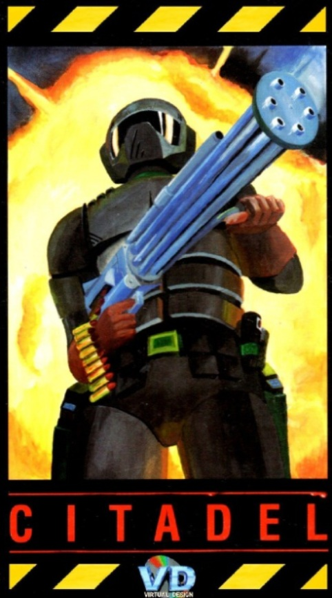
Citadel - Original version
Cytadela — wersja oryginalna
Citadel has been developed by Virtual Design between February 1994 and May 1995. The main team consisted of 4 people (1 developer, 2 graphics designers, 1 musician) although several other people were involved part time, such as level designers and testers.
It has been released in 1995 in Poland by Arrakis Software as Cytadela, and in the UK and Germany by Black Legend as Citadel. The three versions had different locales in parts of the game, and the German version had some of the graphics modified (humans replaced by robots) because of regulatory limitations related to depicting shooting of human beings in video games at the time.
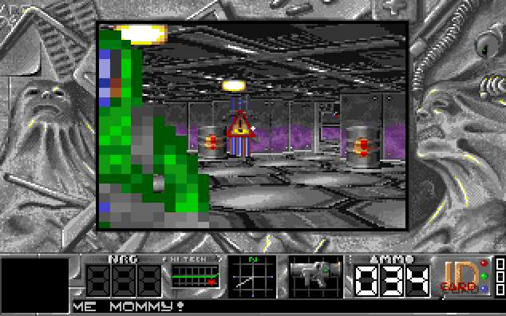
The Citadel had strong 3D FPS competition on the Amiga at that time, with titles such as Breathless, Fears, Aliend Breed 3D, Gloom or Behind the Iron Gate released around the same year. However, Citadel was one of the few games of the type that targetted not just the A1200 and higher end models but also the A500, with 1MB of memory required to play. It also suports a large number of in-game objects (enemies, items, different sized objects, partially transparent multi-layered walls etc.) without a significant performance penalty. It has been written entirely in assembler to make the most out of the Amiga hardware and was at the time the most graphically advanced 3D game for the A500, although due to performance limitations practically playable only in a very small window.There were 3 releases of the game, each new version replacing the previous one in distribution:
- 1.0 - The original release
- 1.1 - Bugfix release
- 1.2 - HD installer release
The Citadel sold about 1500-1600 copies in Poland, and an undisclosed number in the UK and Germany since Black Legend closed down in 1996 and Arrakis Software not long after, due to the decline of the Amiga market.
All files below are provided under the GNU GPLv3 License. Private use and distribution is allowed and free, any commercial use should be agreed with the authors.
Cytadelę stworzył zespół Virtual Design między lutym 1994 a majem 1995. W głównym składzie były 4 osoby (programista, 2 grafików i muzyk), dodatkowo kilka osób pracowało dorywczo jako projektanci poziomów i testerzy.
Gra ukazała się w 1995 roku: w Polsce nakładem Arrakis Software jako Cytadela, w Wielkiej Brytanii i Niemczech nakładem Black Legend jako Citadel. Trzy wersje różniły się lokalizacją w głównej części gry; wersja niemiecka miała też zmienioną część grafiki (ludzie zastąpieni robotami) z powodu ówczesnych ograniczeń dotyczących strzelania do ludzi w grach.
Na Amigę była wtedy silna konkurencja gier 3D FPS — w podobnym czasie wyszły m.in. Breathless, Fears, Alien Breed 3D, Gloom czy Behind the Iron Gate. Cytadela była jedną z nielicznych gier tego typu działających nie tylko do A1200 i wyższe modele, ale też na A500 (wystarczył 1 MB pamięci). Silnik obsługuje wiele obiektów (wrogowie, przedmioty, obiekty różnych rozmiarów, częściowo przezroczyste wielowarstwowe ściany itd.) bez dużego spadku wydajności. Gra została napisana w całości w asemblerze, by w pełni wykorzystać hardware Amigi; była wówczas najbardziej zaawansowaną graficznie grą 3D na A500, choć z powodu ograniczeń wydajności dało się w nią praktycznie grać tylko w bardzo małym oknie.
Wydano 3 wersje gry, każda nowa wersja zastępowała poprzednią w dystrybucji:
- 1.0 - Wersja oryginalna
- 1.1 - Wersja z poprawkami
- 1.2 - Wersja z instalatorem HD
W Polsce sprzedano ok. 1500–1600 egzemplarzy; liczby dla UK i Niemiec nie są znane — Black Legend zakończył działalność w 1996, Arrakis Software niedługo potem, w związku z upadkiem rynku Amigi.
Wszystkie pliki poniżej są udostępnione na licencji GNU GPLv3 do użytku prywatnego; użycie komercyjne należy uzgodnić z autorami.
Downloads
Linki i pliki do pobierania
| File information | Informacje o pliku | Link |
|---|---|---|
| Original 5 disks (Polish) |
Local download My Abandonware PPA The Old Computer |
|
| Original 5 disks (English) |
Local download My Abandonware PPA The Old Computer |
|
| WHDLoad full version (English) | Local download WHDLoad site |
|
| WHDLoad HD installer (Polish) | Local download PPA |
|
| WHDLoad HD installer (English) | Local download | |
| Disk 1 cracked (Polish) | Local download | |
| Demo version - one level (English) | Local download | |
| Level Editor (Polish) | Local download | |
| Full manual pdf (Polish) |
Local download Amiga Hall of Light |
|
| Full manual pdf (English) |
Local download Amiga Hall of Light |
|
| Draft manual txt (Polish) | Local download | |
| Copy protection codes | Local download PPA |
|
| Cheat codes | Local download PPA |
|
| Maps | Local download | |
| Music (mod files) | Local download My Abandonware |
|
| Source code | Github | |
| Reviews (UK and US) |
Amiga Magazine Rack Amiga Hall of Light Amiga Reviews |
|
| Reviews (Polish) |
Top Secret #42 1995 (Internet Archive) Swiat Gier Komputerowych #4 1996 (Zlote Dyski) PPA |
{kind=link}
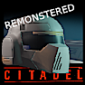
Citadel Remonstered
Cytadela Remonstered
In February 2022 part of the original Virtual Design team, Pawel and Artur, decided to give the almost 30 years old game a makeover.
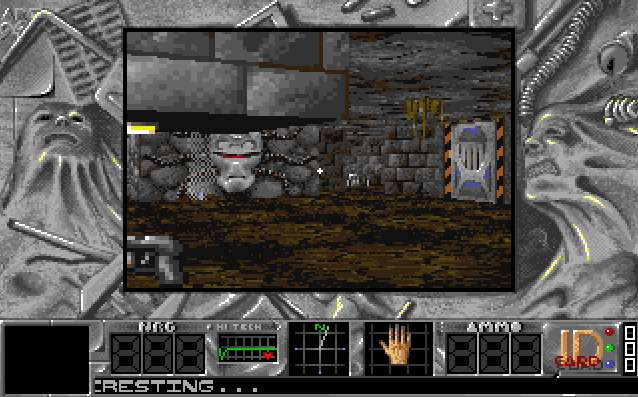
This was driven largely by problems on fast Amigas and emulators, on which the game was unplayable due to poor handling of speed scaling - it had originally not been properly tested beyond A3000 because of difficult access to high end Amigas in the 1990s. Another incentive was the prospect of releasing Citatel on the A500 Mini, which simply required some fixes and changes to add contorller support. Because some of the code and assets had been lost in time, the way forward was to update and replace the main part of the game (the "engine") using WhdLoad. The English Citadel version was used as the starting point. The project finally grew from the originally planned 1-2 weeks to over a month. The final 1.30 release 1_3_22_03_30_02, on the 30th of March 2022 included a major performance overhaul of the engine, level and graphics, and a number of other fixes:
W lutym 2022 część oryginalnego zespołu Virtual Design, Paweł i Artur, postanowiła odświeżyć liczącą prawie 30 lat grę.
Głównym powodem były problemy na szybszych Amigach i emulatorach, gdzie była niegrywalna z powodu słabego skalowania prędkości — nie była pierwotnie testowana poza A3000 z powodu trudnego dostępu do topowych modeli Amig w latach 90. Kolejnym bodźcem była perspektywa wydania Citadel na A500 Mini, co wymagało poprawek i obsługi padu. Część oryginalnego kodu i assetów zaginęła, możliwe było zaktualizowanie i zastąpienie głównej części gry („silnika”) przy użyciu WhdLoad. Za punkt wyjścia posłużyła angielska wersja Cytadeli. Projekt urósł z planowanych 1–2 tygodni do ponad miesiąca. Ostateczna wersja 1.30, 1_3_22_03_30_02 z 30 marca 2022 obejmuje dużą poprawę wydajności silnika, poziomów i grafiki oraz szereg innych poprawek:
- The 3D rendering engine has been optimised as much as possible within the current game architecture, resulting in a 4-6x performance increase
- Gameplay has been improved by implementing additional usability features such as WASD+mouse simultaneous control, CD32 type controller support, auto-weapon change etc.
- Level graphics has been significantly updated including textures and enemies
- Level maps have been corrected or re-designed for better playing experience, fast-paths added in huge levels
- Difficulty has been re-balanced
- FPS counter added
- Crosshairs added
- Speed issues fixed on fast machines: 030/040/060, overclocked CPUs, PiStorm, Vampire, Warp1260 and other accelerators, and fast emulators. Speed capped to 50fps.
- Manual has been re-written with an extended back-story and updated content
In the videos showcasing performance, linked above, the top counter is FPS and the bottom is the equivalent in frames used to render a scene on a 50KHz PAL system. On a stock A1200 with an additional 1MB of Fast RAM, which was the main optimisation target, this version is perfectly playable at around 12fps (18-20 without textured floors and ceilings) in a 1x1 pixel 160x128 window.
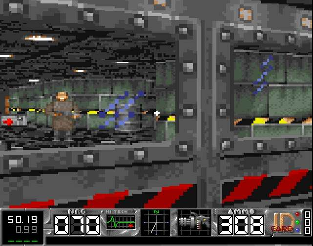
The original 3D engine has been optimised, but did not fundamentally change. It is still quite capable and some tricks like those in this video allow to achieve a really nice feel of varying vertical positions of floors and ceilings. This has however not been used in the original level design, although lowered ceilings are included in some places in the Remonstered version.In February 2026 verion 1.31 has been released, adding the option to invert Left and Right mouse button operation during gameplay.
All files below are provided under the GNU GPLv3 License. Private use and distribution is allowed and free, any commercial use should be agreed with the authors.
- Silnik 3D został zoptymalizowany w ramach obecnej architektury gry, co dało 4–6× wzrost wydajności
- Rozgrywkę ulepszono m.in. przez WASD+mysz, obsługę padów w stylu CD32, automatyczną zmianę broni itd.
- Zaktualizowano grafikę poziomów (tekstury, wrogowie)
- Mapy poziomów poprawiono lub przeprojektowano, na dużych poziomach dodano skróty
- Zbalansowano poziom trudności
- Dodano licznik FPS
- Dodano celownik
- Naprawiono prędkość na szybszych maszynach: 030/040/060, PiStorm, Vampire, Warp1260 i inne akceleratory oraz szybkie emulatory. Gra jest liimtowana do 50 FPS.
- Instrukcję przepisano z rozszerzoną historią i zaktualizowaną treścią
W filmach prezentujących wydajność (linki powyżej) górny licznik to FPS, dolny — ekwiwalent w klatkach przy 50 kHz PAL. Na standardowej A1200 z dodatkowym 1 MB Fast RAM, która była głównym celem optymalizacji, ta wersja jest w pełni grywalna przy ok. 12 FPS (18–20 bez teksturowanych podłóg i sufitów) w oknie 160×128 px 1:1.
Oryginalny silnik 3D został zoptymalizowany, nie zmieniając go jednak fundamentalnie. Nadal sporo potrafi; sztuczki jak w tym filmie pozwalają uzyskać zróżnicowane poziomy podłóg i sufitów. W oryginalnym designie poziomów tego nie użyto, choć obniżone sufity są już w niektórych miejscach w wersji Remonstered.
W lutym 2026 została wydana wersja 1.31, dodająca opcję inwersji operacji lewego i prawego przycisku myszy podczas gry.
Wszystkie pliki poniżej są udostępnione na licencji GNU GPLv3 do użytku prywatnego; użycie komercyjne należy uzgodnić z autorami.
Downloads
Linki i pliki do pobierania
| File information | Link |
|---|---|
| 1.30 WhdLoad full version v1_3_22_03_30_02 (LHA) |
Local download Aminet |
| 1.30 WhdLoad full version v1_3_22_03_30_02 (ZIP) | Local download |
| 1.30 Manual | Local download |
| 1.31 WhdLoad full version v1_31_26_02_19_02 (LHA) | Local download |
| 1.31 WhdLoad full version v1_31_26_02_19_02 (ZIP) | Local download |
| 1.31 Manual | Local download |
| Source code | Github |
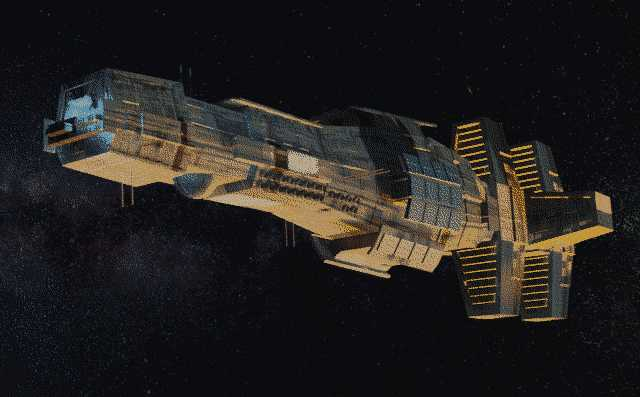
Citadel Evacuation
Cytadela: Ewakuacja
In 2021, part of the original Virtual Design team, Pawel and Artur, began work on a continuation of the original game: Citadel: Evacuation.
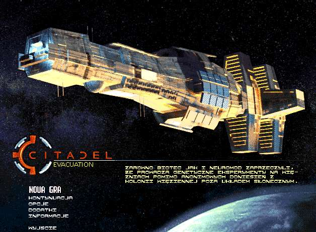
The story picks up where Citadel ended — with the main protagonist leaving planet B104‑GS12 in a small, one‑person reconnaissance spacecraft after finally destroying the experimental BioTec facility. After reaching orbit, he once again finds himself alone with his thoughts and with no apparent means of rescue, light‑years from Earth...However, it soon becomes clear that he is not the only one orbiting B104‑GS12. A starship looms in the distance — silent, observing, waiting — seemingly ready to rescue the lone survivor... or is it?
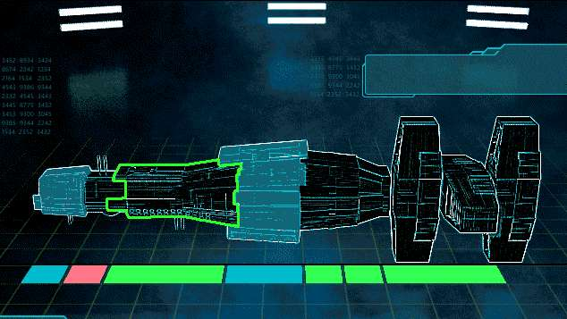
The implementation was also done in assembler and progressed to the point of creating the loader, main menu, mission‑selection system, and adding various pieces of background information to the main story. The game was originally intended for Amigas with at least 2MB of memory, likely ruling out the A500. Work stopped after about two months when we realised the game would not feel compelling if it simply reused the old 3D engine. Even with some additional tricks the engine was capable of, it would have played more like an add-on with new levels for the original game. To remain competitive with contemporary 3D titles on fast, modern Amigas, the entire engine would have needed a complete rewrite to support features such as flexible wall angles, vertical movement, multiple vertical planes, improved textures, lighting and shading support, and more. The scope of work required far exceeded the time available, so the project was ultimately shelved.
W 2021 roku część oryginalnego zespołu Virtual Design, Paweł i Artur, rozpoczęła prace nad kontynuacją gry: Cytadela: Ewakuacja.
Fabuła zaczyna się tam, gdzie kończy się Cytadela — protagonista opuszcza planetę B104‑GS12 małym jednoosobowym statkiem rozpoznawczym po zniszczeniu eksperymentalnego obiektu BioTec. Na orbicie znów zostaje sam ze swoimi myślami, bez widocznej szansy na ratunek, lata świetlne od Ziemi...
Wkrótce okazuje się jednak, że nie tylko on krąży wokół B104‑GS12. W oddali pojawia się statek — cichy, obserwujący, czekający — gotowy uratować ocalałego bohatera... czy aby na pewno?
Implementacja jest w asemblerze; doprowadzono ją do etapu loadera, menu głównego, wyboru misji i różnych informacji uzupełniających fabułę. Gra była przewidziana na Amigi z co najmniej 2 MB pamięci. Prace przerwano po ok. dwóch miesiącach, gdy stało się jasne, że użycie starego silnika 3D nie dałoby przekonującej gry — nawet z dodatkowymi sztuczkami byłoby to raczej jedynie add-on z nowymi poziomami. Aby konkurować z ówczesnymi tytułami 3D na szybkich Amigach, silnik musiałby zostać przepisany od nowa (elastyczne kąty ścian, ruch w pionie, wiele płaszczyzn, lepsze tekstury, oświetlenie itd.). Zakres prac przekraczał dostępny czas, więc projekt odłożono.
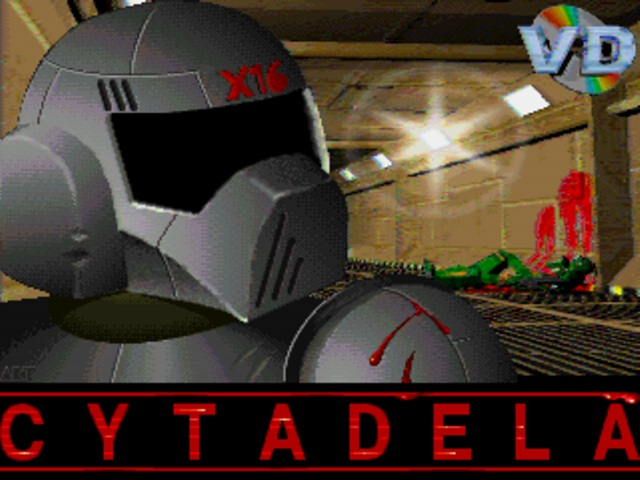
OpenGL version
Wersja OpenGL
In 2006, Tomasz Kaźmierczak (later joined by additional contributors) implemented and released a free OpenGL port of Citadel, which runs on Windows, Linux, and macOS. This version aims to stay as close to the original as possible, with some differences arising from the fact that it does not run on an Amiga and uses the OpenGL rendering engine.
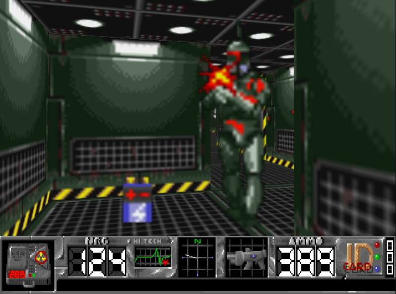
This was a truly impressive feat because it required reverse-engineering the game's algorithms, some of the assets (as not all could be provided), and various data formats such as maps and event chains. There have been several releases, starting from version 0.6 in 2006 up to version 1.1.0 in 2013, adding new functionality along the way, supporting several languages (Polish, English, German, French, and Czech), offering different screen resolutions, and fixing bugs.Both the code and all compiled releases are available to download and use under the GNU GPLv3 License.
W 2006 roku Tomasz Kaźmierczak (później z innymi współautorami) zaimplementował i wydał darmowy port OpenGL Cytadeli, działający w Windows, Linuxie i macOS. Wersja miała być jak najbliższa oryginałowi; różnice wynikają głównie z użycia silnika OpenGL.
Było to imponujące osiągnięcie: wymagało reverse‑inżynieringu algorytmów gry, części zasobów (nie wszystkie dało się odnaleźć i udostępnić) oraz formatów danych (mapy, zdarzenia). Było kilka wydań od wersji 0.6 (2006) do 1.1.0 (2013), z nowymi funkcjami, wsparciem wielu języków (polski, angielski, niemiecki, francuski, czeski), różnymi rozdzielczościami i poprawkami błędów.
Kod i wszystkie wersje są dostępne na licencji GNU GPLv3.
Links and Downloads
Linki i pliki do pobierania
| File information | Link |
|---|---|
| Cytadela OpenGL project page | SourceForge |
| All Releases | SourceForge |
| Latest Release | SourceForge |
A500 Mini version
Wersja A500 Mini
One of the triggers for Citadel Remonstered was the release of The A500 Mini by Retro Games in April/May 2022. This required at least fixing performance issues and adding gamepad support, with the requirement that no keyboard should be necessary. Initially, Citadel Remonstered was supposed to be included in the default game carousel, but it ultimately ended up being delivered as an official downloadable bonus game pack available on the Retro Games website. Since then, general sideloading support has been made available, and Citadel can be side-loaded after downloading it from any location.
The version of Citadel Remonstered originally released for the A500 Mini was 1_3_22_03_03_01 which has since been superceded by newer versions including some bugfixes.
Jednym z impulsów do Citadel Remonstered było wydanie The A500 Mini przez Retro Games w kwietniu/maju 2022. Aby Cytadela działała na tej platformie, trzeba było m.in. poprawić wydajność i dodać obsługę pada, tak by klawiatura nie była potrzebna. Początkowo Cytadela Remonstered miała być w domyślnej karuzeli gier, ostatecznie skończyła jako oficjalny bonusowy pakiet do pobrania ze strony Retro Games. Później udostępniono ogólne sideloadowanie — grę można więc wgrać po pobraniu z dowolnego źródła.
Wersja Cytadeli Remonstered pierwotnie wydana na A500 Mini to 1_3_22_03_03_01; zastąpiły ją nowsze wersje z poprawkami.
Links
Linki
| A500 Mini Citadel page | RetroGames website |
| A500 Mini bonus USB Games Pack | RetroGames website |
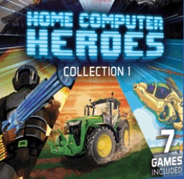
Evercade version
Wersja Evercade
On the 1st of October 2023 Citadel Remonstered was released on the Evercade Home Computer Heroes Collection 1 cartrige for the Evercade handheld consoles. This version (1_3_22_03_30_02) included additional bug fixes and tailoring to run without issues on the console, including proper handling of its controls and gamesave system, and it currently works on all Evercade consoles.
1 października 2023 Cytadela Remonstered ukazała się na kartridżu Evercade Home Computer Heroes Collection 1 do konsol przenośnych Evercade. Ta wersja (1_3_22_03_30_02) zawiera dodatkowe poprawki i dostosowanie do działania na konsoli, w tym obsługę sterowania i zapisu; działa na wszystkich konsolach Evercade.
Links
Linki
| Evercade Citadel Remonstered |
Evercade website (introduction) Evercade website (description) |
| Home Computer Heroes Collection 1 Trailer | YouTube |
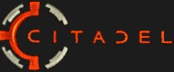
WebGL version
Wersja WebGL
Implementation of the WebGL JavaScript port started in late October 2025 as an experiment to see how the engine would look in a browser.
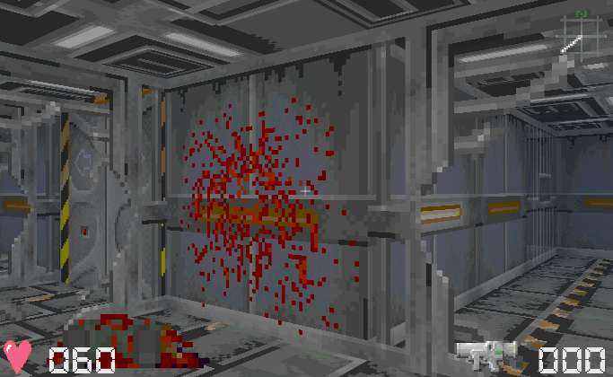
It ultimately became a complete implementation of the game, finished in early December 2025. It stays as close to the original Citadel Remonstered as possible in terms of playability, reusing most of the original assets in their original formats: unconverted .iff graphics files, .mod music files, and original binary map files. There are some functional differences which do not affect the core gameplay, such as support for touchscreen devices to allow playing on phones and tablets, different screen modes suitable for use in a browser, an in-game menu, the ability to free-play any level outside of the campaign, and options to watch the intro and outro.There is a dedicated page on this website with much more information and the link to play the game directly in your browser!
Implementacja portu WebGL w JavaScript ruszyła pod koniec października 2025 jako eksperyment z działaniem silnika w przeglądarce.
Przerodziła się w pełną wersję gry ukończoną na początku grudnia 2025. Gra jest funkcjonalnie jak najbliżej oryginalnej Cytadeli Remonstered pod względem rozgrywki, z większością oryginalnych zasobów w oryginalnych formatach: niekonwertowane pliki .iff, .mod i binarne mapy. Są drobne różnice funkcjonalne niezmieniające samej rozgrywki: obsługa ekranu dotykowego (telefony, tablety), tryby ekranu do przeglądarki, menu w grze, wybór dowolnego poziomu do treningu poza kampanią, dostępne intro i outro.
Wiecęj informacji jest na stronie dedykowanej Cytadeli WebGL!
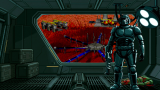
PC version
Wersja PC
In April 2026, the WebGL version has been adapted for the PC. It still uses the same core JS engine, with wrappers making it a standalone game for Windows and x86 Linux (Ubuntu, Fedora).
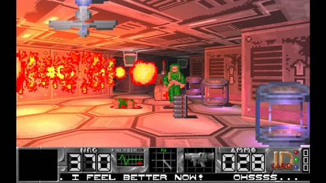
It is available on Good Old Games (GOG) for free, as part of the retro games preservation program. It introduces some small enhancements as well as two new level of details, medium with dynamic lighting, and high with particle combat effects. They significantly change how the game looks and feels, making it more modern - if you want the oldschool retro vibe, switch back to the original low level of details. There is also a dedicated trailer for this version which can be found here.
W kwietniu 2026 wersja WebGL została zaadaptowana na PC. Nadal używa tego samego silnika JS jest jednak samodzielną grą na Windowsa i x86 Linuksa (Ubuntu, Fedora).
Wersja ta jest dostępna na Good Old Games (GOG) za darmo, w ramach programu zachowania gier retro. Wprowadza drobne ulepszenia oraz dwa nowe poziomy detali: średni z dynamicznym oświetleniem i wysoki z dodatkowymi efektami podczas walki. Znacząco zmieniają wygląd i odczucia z gry, nadając jej bardziej nowoczesny charakter — jeśli wolisz klimat oldschoolowego retro, przełącz z powrotem na oryginalny niski poziom detali.
Dedykowany trailer tej wersji można znaleźć tutaj.
Links
Linki
| Citadel Remonstered PC | Good Old Games (GOG) |
| Citadel Remonstered PC Trailer | YouTube |